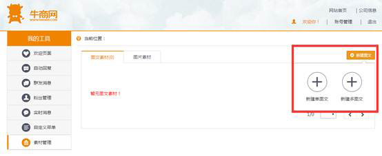
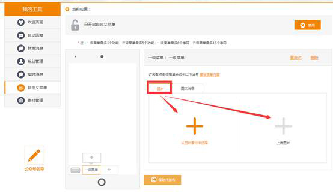

微信管家使用指南（目录）
目 录
1. 绑定公众号
2. 管理图文素材
3. 自动回复
4. 自定义菜单
5. 群发消息
1.绑定公众号
在“欢迎页面”点击“新增账号”可进行账号绑定。
1.1授权绑定
1.选择“授权绑定”，再点击“微信公众号授权”
2.手机扫描二维码进行授权绑定
3.授权成功后，选择功能菜单
4.选择微信号类型，保存后绑定成功
2.管理图文素材
点击一级导航“素材管理”，进入相应页面。默认进入“素材管理-图文素材”页面。

鼠标移动至“新建图文”，可选择新建单/多图文素材。

2.1新建单图文素材
点击“新建单图文”，进行单图文消息编辑。点击右上角“输入内容”，可进行“选取内容”和“输入内容”的切换。默认进入“选取内容”的编辑页面（建议采用选取内容的方式进行编辑）。
1.选取内容
下拉进行频道和分类列表的选择，输入标题名称进行搜索，若不输入标题名称直接进行搜索，显示该分类下的全部文章。
选择文章后，可对标题、封面图片、摘要、正文、原文链接地址进行编辑、修改。
l 标题（必填）：长度为1-64个字（一个字母也算是一个字，不支持换行及设置字体大小）；
l 封面图片（必填）：点击可在素材库中选取，或进行本地上传；最大上传容量2M，允许上传的格式：bmp、png、jpeg、jpg、gif。大图片建议尺寸：900*500像素；
l 摘要（选填）：最多可输入120个字（一个字母也算是一个字），填写摘要后，在粉丝收到的图文消息封面会显示摘要内容；若未填写，在粉丝收到的图文消息封面则展示部分正文内容；
l 正文（必填）：最多可输入20000个字（一个字母也算是一个字）；
l 原文链接（选填）：填写后，图文消息下发给粉丝后，粉丝通过手机微信收到消息后，在正文中点击“阅读原文”，跳转到设置的网页链接。
2.输入内容
对标题、封面图片、摘要、正文、原文链接地址的编辑与修改与“选取内容”一致。
3.素材的保存规则
必须填写标题与封面图片，才可对素材进行保存。
2.2新建多图文素材
点击“新建多图文”，进行多图文消息编辑，与单图文消息的编辑一致。
1.多图文素材内容的新增
点击左边的“+”，可增加图文消息的内容，最多可添加6个图文。
需要注意的是，除第一个图文消息封面图片为大图，大图片建议尺寸：900*500像素。其他图文消息的封面图片显示为小图片，建议尺寸：200*200像素。
2.多图文素材的编辑
鼠标移动到列表时，显示“编辑”和“删除”按钮，可对图文消息进行编辑、删除，鼠标选中上下拖动可以进行排序。
2.3删除图文素材
在图文素材管理页面，将鼠标移到图文素材时，右上角显示“×”，点击删除图标，可删除图文素材。
删除图文素材后，如果是群发消息的素材，则不影响群发后的效果；
如果是自动回复的素材，那对应的自动回复将受到影响，具体为：回复后依旧可以看到封面图、标题，单图文还能看到摘要，但点开时会显示：
3.自动回复
3.1关注时回复
1.关注时回复设置方法
点击一级导航“自动回复-关注时回复”，进入相应页面。填写回复内容，完成关键词回复设置。
设置被关注时回复后，粉丝在关注您的公众号时，会自动发送您设置的文字/图片给粉丝，设置后可根据需要“修改”或“删除”内容。
2.关注时回复的规则
l 文本回复：输入框只可以输入1-600个字（一个字母也算是一个字）；
l 图片回复：只可选取一张图片作为回复。
3.2关键词回复
1.关键词回复设置方法
点击一级导航“自动回复-关键词回复”，进入相应页面。填写规则名、关键词，选择匹配方式、回复类型，完成关键词回复设置。

2.关键词回复的规则
l 规则名：规则上限为200条规则（每条规则名，最多可设置60个汉字）；
l 关键词：每条规则内最多设置10条关键词（每条关键词，最多可设置30个汉字），若设置了相同的关键词，但回复内容不同，系统会随机回复；
l 匹配方式：只能选择一种（即单选），模糊匹配或者精确匹配。粉丝发送的消息内如果含有设置的关键词，这时选择（精确匹配或者模糊匹配）：（1）如果设置了精确匹配则发送的内容与设置的关键词必须完全一样，才会触发关键字回复，比如：设置“123”，仅回复“123”才会触发关键字回复；（2）如果设置了模糊匹配则只需要发送的内容包含设置的关键字，就会触发关键字回复给对方。比如：设置“123”，回复“1234”会触发，但回复不完整的关键字“12”则不会触发关键字回复）；
l 回复类型：只能选择一种，文本回复、图片回复或者图文回复，每条规则内最多1条回复内容。
如果粉丝发送的消息中含有不同规则里相同的关键词，则回复最近编辑保存的内容。
3.3无匹配回复
1.无匹配回复设置方法
点击一级导航“自动回复-无匹配回复”，进入相应页面。填写回复内容，完成关键词回复设置。
当用户发送的内容无任何关键词可匹配时，则属于无匹配回复。设置后可根据需要“修改”或“删除”内容。
2.无匹配回复的规则
l 文本回复：输入框只可以输入1-600个字（一个字母也算是一个字）；
l 图片回复：只可选取一张图片作为回复。
4.自定义菜单
已认证的订阅号、未认证的服务号以及已认证的服务号可以直接开启自定义菜单；而未认证的订阅号需要先申请微信认证，才可以开启自定义菜单。开启自定义菜单之后，将在24小时内对所有粉丝生效。
编辑中的菜单不会马上被用户看到，点击发布后，会在24小时后在手机端同步显示，粉丝不会收到更新提示，若多次编辑，以最后一次保存为准。
4.1菜单管理
点击一级导航“自定义菜单”，进入相应页面。
l 开启自定义菜单：开启自定义菜单之后，将在24小时内对所有用户生效。
l 禁用自定义菜单：系统默认为禁用状态。禁用后，在24小时内对所有用户生效。
自定义菜单分为两部分：菜单管理（左边）及菜单内容管理（右边）

4.2一级菜单
1.添加一级菜单
点击“+”可添加一级菜单，最多可添加3个一级菜单，一级菜单命名最多4个汉字或8个字符。
2.编辑一级菜单
l 排序：鼠标选中任一一级菜单左右拖动，可进行一级菜单之间位置的互换，互换后该一级菜单下的二级菜单跟着一级菜单移动。
l 删除：点击一级菜单，在右边可删除该菜单。删除后，该一级菜单下的内容将都被删除。
l 编辑名称（重命名）：点击一级菜单，右边可编辑名称。
3.设定一级菜单内容（只有在一级菜单下无二级菜单时，才可设定一级菜单内容，否则只能编辑一级菜单的名称）
设置的内容包含：发送消息或跳转到网页。
l 发送消息：可发送信息类型包括图片和图文消息。
l 图片：每次只能群发一张图片，可从素材库选择或本地上传图片。本地上传图片并群发后，该图片将被保存到素材库中；

l 图文：每次只能群发一个单图文或者多图文消息，同样可以从素材库选择或新建图文消息。新建图文消息的话，可选择单图文消息或者多图文消息。新建的图文素材群发后，将被保存到素材库中；
l 跳转到网页：输入URL链接，用户点击该菜单时，直接跳转到对应网页。
4.3二级菜单
1.添加二级菜单
在一级菜单下点击“+”可添加二级菜单，每个一级菜单下最多可添加5个二级菜单，二级菜单命名最多8个汉字或16个字符。
2.编辑二级菜单
l 排序：鼠标选中任一二级菜单上下拖动，可进行二级菜单之间位置的互换。同一个一级菜单下的二级菜单互换同一个一级菜单下的二级菜单；一级菜单与二级菜单不可互换；不是同一个一级菜单下的二级菜单不可互换。
l 删除：点击二级菜单，在右边可删除该菜单。删除后，该菜单下的内容将都被删除。
l 编辑名称（重命名）：点击二级菜单，右边可编辑名称。

3.设定二级菜单内容
可对二级菜单进行发送消息、跳转到网页设置，与设定一级菜单内容一致。
5. 群发消息
点击一级导航“群发消息”，进入相应页面。
5.1新建群发消息
进入“群发消息”页面，默认在“新建群发消息”页面。
1.如何群发？
l 选择群发对象：支持“全部用户”或“按分组选择”；
l 选择群发消息类型：可选择的类型如下图，支持文本、图片、图文消息。
l 编辑群发内容
文本：字数上限为600个字符、或600个汉字；
图片：每次只能群发一张图片，可从素材库选择或本地上传图片。本地上传图片并群发后，该图片将被保存到素材库中，如下图；
图文：每次只能群发一个单图文或者多图文消息，同样可以从素材库选择或新建图文消息。新建图文消息的话，可选择单图文消息或者多图文消息。新建的图文素材群发后，将被保存到素材库中，如下图：
2.群发消息的人数上限？
微信公众平台群发消息的人数没有限制，只能群发给粉丝，不支持群发给非订阅用户。
3.群发消息的规则/限制？
订阅号（认证用户、非认证用户）在1天只能群发1条消息（每天0点更新，次数不会累加）；
服务号（认证用户、非认证用户），1个月（按自然月）内可发送4条群发消息（每月月底0点更新，次数不会累加）；
5.2管理群发消息
在“群发消息”菜单下，点击“已发送列表”，切换到群发消息管理的页面。
在群发消息管理中，可删除群发消息，查看群发消息（类型，时间，发送成功/失败人数）
1.群发消息的删除
通过查看已发送列表（包括发送成功、发送失败的消息），点击“删除”按钮，可删除群发消息，如下图：
将删除图文消息详情页（多图文消息删除所有详情页），但粉丝仍能在会话页面查看预览内容；
将删除公众号的“已发送列表”中的相关记录；
图文消息删除后，群发权限不会恢复；图文消息删除5分钟后全部生效。
温馨提示：目前在微信公众平台中只能删除已发送成功的消息；正在群发中的消息，暂不支持撤回或删除。
2.查看群发消息
可查看群发消息的类型（文字消息、图片消息、图文消息），发送时间，对于发送成功的消息，将鼠标移至“发送成功”，还可查看群发成功/失败的人数，如下图：